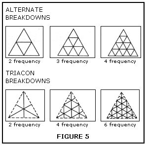

Where Domes Come From
Geodesic domes, are cheap, strong, light and graceful but little information is available on small domes. This article is intended to help fill the information gap by explaining the theory on which domes are based, and to encourage you to try designs of your own.
By John Prenis
May/June 1971
Geodesic domes possess many advantages. They're cheap, strong, light and graceful. Unfortunately, until very recently, there has been little information available on small domes that could be built by the average person. This article is intended to help fill the information gap by explaining the theory on which domes are based, and to encourage you to try designs of your own.
There is no reason to be intimidated by the apparent complexity of dome patterns. Anyone who can handle simple trigonometry can design a dome to meet his own needs. We'll start by exploring the geometric relations that form the basis for all dome structures.
Every dome ever built ultimately derives from one of the five regular solids shown in figure one. Dome design consists of breaking down these basic frameworks into networks of smaller faces that can be handled more easily.
DOME STARTER
Figure one shows some interesting relationships. Notice that the sum of the faces and the vertices always exceeds the number of edges by two. This relation, V + F = E + 2, is known as Euler's formula, and is true for any solid, regular or not.
Also notice that both cube and octahedron have the same number of edges, while each has as many vertices as the other has faces. This implies that the two solids can be superimposed with the faces of each corresponding to the vertices of the other. This is so, and the relation is known as duality. The dodecahedron and the icosahedron are duals, and the tetrahedron is its own dual. Figure two shows interpenetrating pairs of these dual solids.
Here is another, relationship; if you place a stubby pyramid over each face of one of the regular solids, you'll find that the pyramid sides merge into diamonds. Thus we get a new addition to each of our three pairs of duals, since a solid and its dual will each yield the same form when treated in this way. From the cube and octahedron we get the rhombic dodecahedron. From the dodecahedron and icosahedron, we get the rhombic triacontahedron. From the tetrahedron, we get (surprise!) the cube.
Figure 3a shows how this process generates the cube from the tetrahedron, and the rhombic dodecahedron from the octahedron and the cube.
Comparing figures one and three, we find that these new solids have as many faces as their parents have edges, twice as many edges as their parents, and as many vertices as their parent's faces and vertices combined.
We now have three families of related solids:
I like to call them the three family, the four family, and the five family, after the dominant symmetry in each. In figure four, all three members of each family are superimposed and projected onto a sphere.
Each family is composed of identical right triangles formed by intersecting great circles (geodesics). They are actually simple dome frames. A close look will show that they are 2 frequency triacon breakdowns. This leads us to our next subject.
BREAKDOWNS
All domes start with a network of triangles which are broken down into smaller triangles. The sides of the small triangles become the struts or frame members of the actual dome. The two common breakdowns are the alternate, and the triacon, shown, in figure five.
'Frequency' refers to the number of times a side of the original triangle is divided. For an alternate breakdown, lines are drawn parallel to the sides of the triangle; for a triacon breakdown, they are drawn parallel to the medians. Note that in the triaconhedron breakdown, the struts representing the sides of the original triangle may be omitted. Also note that a triacon breakdown is possible only for even frequencies.
By omitting certain struts, we can have domes made up of diamonds, or hexagons in combination with pentagons, squares, or triangles. In domes may be tailored to meet various requirements
MODELS
If you've followed me up to this point, I'm I'm sure you'll agree that the best way to visualize these relations is with it concrete 3-D model sitting in front of you.
D-Stix from Edmund Scientific are good, but they must cost money, and you never have enough of them. My favorite low cost alternative is the common soda straw. They are readily available and can be easily cut to length. Connectors are easily made from three inch lengths of pipe cleaner, as shown in figure six. The straws slide over the ends of these pieces, two ends to a straw.
Connectors can also be made from lengths of straw that have been flattened, creased, and folded lengthwise. I have used this system to make elegant miniature models from the straws in plastic reed cafe curtains.
Whatever system you use, be sure to allow for the width of your connectors when cutting struts. Otherwise the sides of your model will be longer than you intended.
WHO'S AFRAID OF SPHERICAL TRIG?
Among the other advantages of the spherical shape is the fact that spherical trigonometry can be used to calculate angles, strut lengths and so forth. This greatly simplifies matters.
Spherical trig is not difficult and should hold no terrors for anyone who remembers enough high school trigonometry to use a trig table. For dome math, you'll need a 5 place trig table, a clear head, and lots of paper.
Solving triangles on a spherical surface takes some getting used to. For one thing, the angles in a triangle add up to more than 180°. (The sum of the angles about a point still equals 360°.) "Straight lines" are now arcs of great circles. This makes it possible to measure an arc by the angle it makes at the sphere's center. (See figure seven.) It also makes it possible to confuse an arc measured in degrees. So be careful!
Measuring arcs this way is useful, because measurements become independent of size. A 90° arc goes one quarter of the way around any sphere, regardless of how big it is.
Most dome math involves only the solution of right angled triangles. Ten formulas are sufficient for this, and they have been condensed into an easily remembered form by Charles Napier. Figure eight shows a general right spherical triangle with all 6 sides and angles labeled, and beside it a pentagram containing the same parts in order, omitting the right triangle.
Two rules (and the magic pentagram) are all you need to remember:
Sine (of any angle or side) = product of cosines of the opposite parts
Sine (of any side or angle) = product of the tangents of the adjacent parts
The small c's remind you to use the co-function of the function specified.
For instance:
sin a = sin c sin A or sin a = cotan B tan b
cos B = sin A cos b or cos B = cotan c tan a
and so forth. All ten formulas can be recalled in this way. If you know any two parts of a right triangle, you can find the remaining three.
Once you know the lengths of all your arcs, you will want to turn them into strut lengths. This is done by means of chord factors.
chord factor = 2 sin ( arc angle)
2
A chord factor is the length of the strut needed for a sphere with a radius of one unit. To find the strut length you want, multiply by the radius of the dome you intend to build.
strut length = chord factor x dome radius
While the calculations in spherical trig are simple enough, seeing what's going on is something else again. A "blackboard" is a real help. Get a smooth plastic ball at least a foot in diameter. Cut a strip of paper long enough to go completely around and divide it into 36 10° segments. You now have a "ruler". Make quick sketches on your "blackboard" with a washable felt pen, measure the arcs with your "ruler" to check your calculations, then wash off the whole thing. This will save you a lot of grief and wasted time.
AN EXAMPLE
To tie everything together, let's work out a dome frame-3 v octahedron, alternate breakdown.
From the sketches in figure nine we can see that each angle of the main triangle is 90°. There are three arc lengths to be found and we have already (arbitrarily) defined one of them as 30°. Let's start with the tip section of our triangle (figure ten). We need the bottom arc, corresponding to c in the sketch.
Now we can figure chord factors:
If we wanted a 16' diameter dome, we'd multiply by our radius of 8', getting 4.14112', 5.65648', and 4.64624' for our strut lengths, (or 4'1-1/16", 5'8-1/2", 4'8-3/8").
Here, to save you some time, are some arc lengths you'll be using often.
3 + 4 families
cube edge 70° 32.74'
tetra edge (+ cube diagonal) 109° 28.26'
rhombic dodeca edge - (1/2 cube edge) 54° 44.13'
5 family
dodeca edge 41° 49.033'
icosa edge 63° 26.077'
rhombic triaconta edge 37° 22.445'
You should find it quite simple (and good practice) to calculate chord factors for the three families in figure four.
ON YOUR OWN
Both the original solid and the breakdown you apply to it may be varied to suit special purposes. Some of these are better use of materials, greater standardization of parts, or ease of construction. Or you may just want a different looking dome. You may wish to distort the standard dome shape. Domes can be stretched by adding extra sections, or truncated to join with other domes or structures. Octahedron based domes always divide neatly into 3/4, 1/2, 1/4, 1/8 sections, like an orange. Icosa-based domes can be designed at 3/8, 1/2, or 5/8 spheres. Most domes seen today are icosa-based, but be sure to consider the alternatives-you may develop one that has special advantages for you.
For practical nut-and-bolt-infcsrmation, the following are especially recommended:
All available from MOTHER, and worth every penny.
When you have a design ready, double check all your calculations. Build a scale model with as many details as you can manage and practice assembling it. Try to make your mistakes at the model stage. If you have any questions, or run into a snag, let me know and I'll do my best to help. (Return postage appreciated.)
And when your dream dome is up tell MOTHER all about at it might be worth an article?
|
FIGURE 6 |
FIGURE 7 |
FIGURE 8 |
|
FIGURE 9 |
FIGURE 10 |
|
|
 |
|
 |
|
|
|
|
|
|
|
|